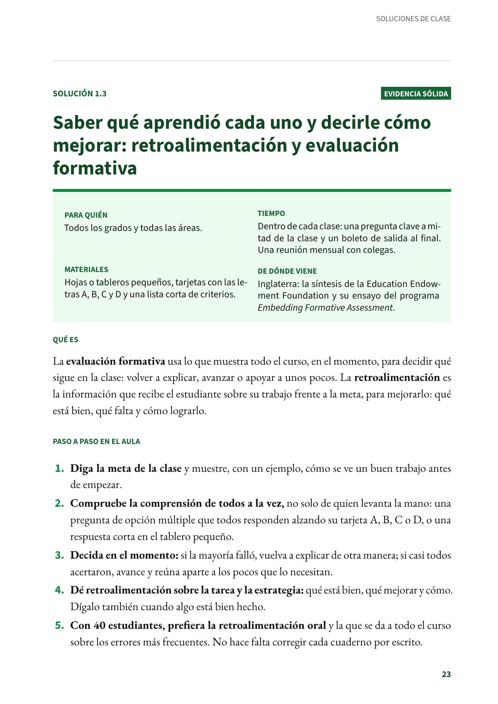
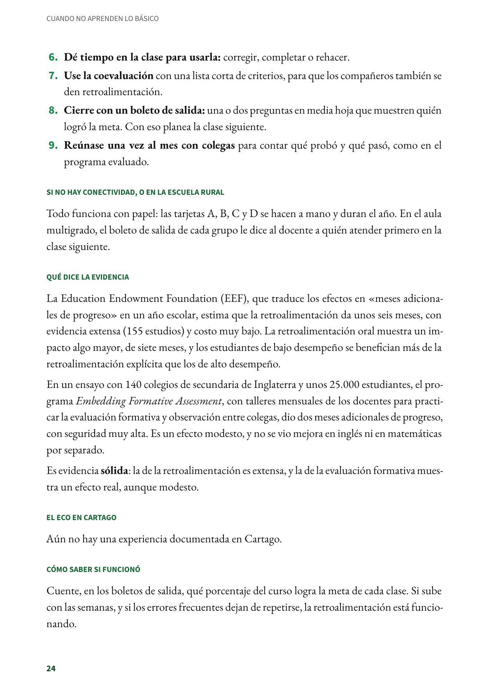
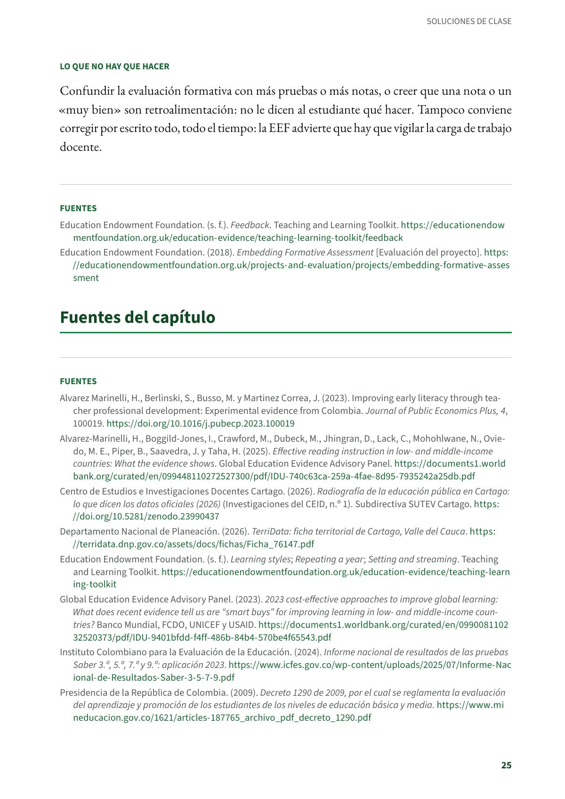

Saber qué aprendió cada uno y decirle cómo mejorar: retroalimentación y evaluación formativa
La evaluación formativa usa lo que muestra todo el curso, en el momento, para decidir qué sigue en la clase. Todos los grados y todas las áreas. Evidencia sólida.
PDF · 3 págs. · 75 KBEn resumen
- Evidencia: sólida.
- Para quién: Todos los grados y todas las áreas.
- Tiempo: Dentro de cada clase: una pregunta clave a mitad de la clase y un boleto de salida al final. Una reunión mensual con colegas.
- Materiales: Hojas o tableros pequeños, tarjetas con las letras A, B, C y D y una lista corta de criterios.
- De dónde viene: Inglaterra: la síntesis de la Education Endowment Foundation y su ensayo del programa Embedding Formative Assessment.
Qué es
La evaluación formativa usa lo que muestra todo el curso, en el momento, para decidir qué sigue en la clase: volver a explicar, avanzar o apoyar a unos pocos. La retroalimentación es la información que recibe el estudiante sobre su trabajo frente a la meta, para mejorarlo: qué está bien, qué falta y cómo lograrlo.
Paso a paso en el aula
- Diga la meta de la clase y muestre, con un ejemplo, cómo se ve un buen trabajo antes de empezar.
- Compruebe la comprensión de todos a la vez, no solo de quien levanta la mano: una pregunta de opción múltiple que todos responden alzando su tarjeta A, B, C o D, o una respuesta corta en el tablero pequeño.
- Decida en el momento: si la mayoría falló, vuelva a explicar de otra manera; si casi todos acertaron, avance y reúna aparte a los pocos que lo necesitan.
- Dé retroalimentación sobre la tarea y la estrategia: qué está bien, qué mejorar y cómo. Dígalo también cuando algo está bien hecho.
- Con 40 estudiantes, prefiera la retroalimentación oral y la que se da a todo el curso sobre los errores más frecuentes. No hace falta corregir cada cuaderno por escrito.
- Dé tiempo en la clase para usarla: corregir, completar o rehacer.
- Use la coevaluación con una lista corta de criterios, para que los compañeros también se den retroalimentación.
- Cierre con un boleto de salida: una o dos preguntas en media hoja que muestren quién logró la meta. Con eso planea la clase siguiente.
- Reúnase una vez al mes con colegas para contar qué probó y qué pasó, como en el programa evaluado.
Si no hay conectividad, o en la escuela rural
Todo funciona con papel: las tarjetas A, B, C y D se hacen a mano y duran el año. En el aula multigrado, el boleto de salida de cada grupo le dice al docente a quién atender primero en la clase siguiente.
Qué dice la evidencia
La Education Endowment Foundation (EEF), que traduce los efectos en «meses adicionales de progreso» en un año escolar, estima que la retroalimentación da unos seis meses, con evidencia extensa (155 estudios) y costo muy bajo. La retroalimentación oral muestra un impacto algo mayor, de siete meses, y los estudiantes de bajo desempeño se benefician más de la retroalimentación explícita que los de alto desempeño.
En un ensayo con 140 colegios de secundaria de Inglaterra y unos 25.000 estudiantes, el programa Embedding Formative Assessment, con talleres mensuales de los docentes para practicar la evaluación formativa y observación entre colegas, dio dos meses adicionales de progreso, con seguridad muy alta. Es un efecto modesto, y no se vio mejora en inglés ni en matemáticas por separado.
Es evidencia sólida: la de la retroalimentación es extensa, y la de la evaluación formativa muestra un efecto real, aunque modesto.
El eco en Cartago
Aún no hay una experiencia documentada en Cartago.
Cómo saber si funcionó
Cuente, en los boletos de salida, qué porcentaje del curso logra la meta de cada clase. Si sube con las semanas, y si los errores frecuentes dejan de repetirse, la retroalimentación está funcionando.
Lo que no hay que hacer
Confundir la evaluación formativa con más pruebas o más notas, o creer que una nota o un «muy bien» son retroalimentación: no le dicen al estudiante qué hacer. Tampoco conviene corregir por escrito todo, todo el tiempo: la EEF advierte que hay que vigilar la carga de trabajo docente.
Fuentes
Education Endowment Foundation. (s. f.). Feedback. Teaching and Learning Toolkit. educationendowmentfoundation.org.uk
Education Endowment Foundation. (2018). Embedding Formative Assessment [Evaluación del proyecto]. educationendowmentfoundation.org.uk
Así se ve en el libro
3 páginas

